If it disagrees with experiment, it’s wrong.
—Dr. Richard Feynman
Traditionally, software projects are framed by requirements and deliverables. Teams are given requirements and are expected to produce deliverables that describe how the features that satisfy those requirements will look, behave, and perform. In many cases, the strategic context for those requirements is not communicated, is missing, or is simply not considered. Lean UX radically shifts the way we frame our work by introducing back the strategic context for our feature and design choices and, more important, how we—the entire team, not just the design department—define success. Our goal is not to create a deliverable or a feature: it’s to positively affect customer behavior or change in the world—to create an outcome.
Why focus on outcomes instead of features? It’s because we’ve learned that it’s hard—and in many cases impossible—to predict whether the features we design and build will create both the strategic as well as tactical value we want to create. Will this button encourage people to purchase? Will this feature create more engagement? Will people use this feature in ways we didn’t predict? Will we successfully shift the way people interact with our service? So, rather than focus on the feature, it’s better to focus on the value we’re trying to create, and keep testing solutions until we find one that delivers the value—the outcome—that we desire.
This reframing requires an organization-wide position of humility. It requires teams and managers to use their knowledge and skills and creativity as scientists might: they propose their best solution and then they test to see if they’re right. To reduce the risk of investing too heavily in the wrong features, designs, and engineering implementations, we soften our stance from what is “required” to what is “assumed” to be true. These assumptions—still very much loaded with risk—are our best guess given our current state of knowledge. We know that as we begin to research, design, develop, and test, new information will be revealed, and this new information will undoubtedly force course corrections. It’s for these reasons that we begin with outcomes and assumptions instead of features and requirements.
Language, in this case, is important. Requirements present a seemingly immutable path forward. Assumptions explicitly admit that we might be wrong. We use our assumptions to create and test hypotheses. If you’re familiar with Test-Driven Development (TDD), hypotheses are very similar. They are, in a way, a form of Test-Driven Product Design and Development. We write the test first—the hypothesis. We design and/or develop just enough product (i.e., experiments and Minimum Viable Products [MVPs]) to see if the hypothesis is true. These small tests reduce the risk of going too far forward in the wrong direction. We use objective measures of customer behavior to determine if we’ve achieved our desired outcomes. It is these outcomes that are our definition of progress and ultimately, our new definition of done. Figure 3-1 offers an overview of the process.
This chapter digs into the main tool of outcome-focused work: the hypothesis statement. The hypothesis statement is the starting point for a project. It states a clear strategic vision for the work and shifts the conversation between teams, managers, and stakeholders from outputs (e.g., “We will build an iPhone app”) to outcomes (e.g., “We want to increase the amount of commerce that comes through our mobile channels.”)
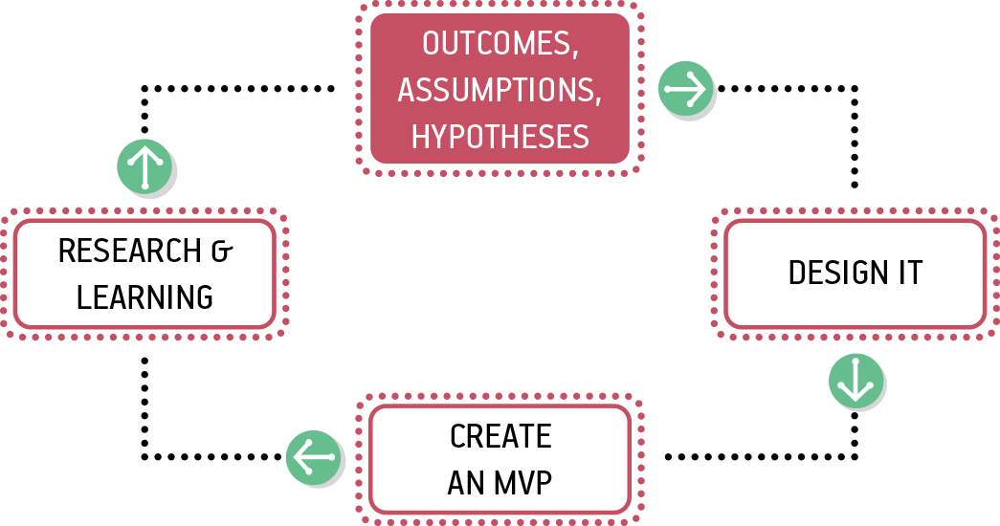
Assumptions are our best guess based on what we know today. They are also filled with risk. Your goal as Lean UX practitioners is to reduce risk.
“We believe our primary user base should be middle school and high school students who would rather use their mobile device over any other to access school content.”
“We believe integrating the default calendar application on our users’ mobile devices is a feature they will value and use often.”
“If our users communicate with one another regularly using our app, it’s an indication that we built and designed the right features.”
Without the evidence to confirm these statements, they are all assumptions, filled with risk. Every downstream decision we make based on untested assumptions increases the risk of failure in our product. So when we find an assumption, we need to ask, How might we ensure that these statements are true as quickly (and cheaply) as possible so that future decisions stand a better chance of succeeding?
To do so, the first step in the Lean UX process is to explicitly declare your assumptions. Every project starts with assumptions, but mostly we don’t acknowledge this fact. Instead, we try to ignore assumptions, or worse, treat them as facts.
Declaring your assumptions allows your team to create a common starting point. By doing this as a team, you give every team member—designer and nondesigner alike—the opportunity to ask questions about your target audience, what problems you’re solving for those people, and how best to solve the problem. It allows the broader group to include concerns about things that might have been missed when the project was framed. This could include technical dependencies, competitive market concerns, or long-term service sustainability issues such as sourcing content. Most important, declaring your assumptions brings a group perspective to what success looks like.
There are four types of assumptions that are particularly important in Lean UX:
Each of these elements is critical to writing a testable hypothesis, as we’ll see later. For now, let’s take a detailed look at one way to find assumptions together as a team.
Declaring assumptions is best done as a group exercise. Gather your team, making sure that all disciplines are represented—including any subject matter experts that could have vital knowledge about your project. For example, if you’re handling a frequent customer complaint, it might be beneficial to include a customer service representative from your call center. Call center reps speak to more customers than anyone else in the organization and will likely have insight the rest of the team won’t. By working together in this cross-functional capacity you are raising the Product IQ of the entire team. Team members not only get to voice their opinions and concerns, but equally as important, they get to hear other points of view. This moves team members away from discipline-specific views of the product to a more holistic, product-focused one.
Give the team advance notice of the problem they will be taking on. Provide them the strategic context for the work to ensure that their tactics agree with the broader goals of the organization. This gives everyone a chance to prepare any material they need, ask questions, or do any research before you begin. Important things to prepare in advance include the following:
Analytics reports that show how the current product is being used
Usability reports that illustrate why customers are taking certain actions in your product
Information about past attempts to fix this issue and their successes and failures
Justification from the business as to how solving this problem will affect the company’s performance
Competitive analyses that show how your competition is tackling the same issues
The team needs to have a starting point for the exercise. We’ve found it helpful to begin with a problem statement. (See the templates for this statement that follow.) These statements are created by key stakeholders as they begin to address the strategic vision for the business. The problem statement gives your team a clear focus for their work. It also defines any important constraints. You need constraints for group work. They provide the guardrails that keep the team grounded and aligned. Creativity thrives in the constraints.
Problem statements take on slightly different flavors depending on whether you are working on an existing product or creating a brand new one. Let’s take a look at each.
Problem statements for existing products are made up of three elements:
The current goals of the product or system
The problem the business wants addressed (i.e., where the goals aren’t being met)
An explicit request for improvement that doesn’t dictate a specific solution
You can use the template shown in Figure 3-2 to express your problem statement. Keep in mind though that there’s nothing magical about this template—or really any of the templates we share in this book. You should adapt the templates so that they make sense to you, your team, and your context.
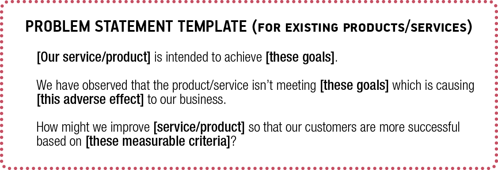
All too often, teams are tasked with poorly worded business problem statements. In fact, these are rarely problem statements at all. They are typically poorly hidden requirements requests. Take this “problem statement,” for example:
Our competitors have all shipped mobile applications in the past 12 months and are advertising them heavily. With the ongoing need to stay competitive, we too must develop more mobile products.
To achieve this, we intend to launch an iOS application by Q2 of this year and ensure that all of our marketing sites are mobile-friendly by the beginning of Q3. In addition, we will launch a Facebook mobile ad campaign to ensure that our acquisition targets are hit this year.
This statement fails to declare a real business problem (other than feature parity concerns with our competition) nor does it indicate the impact (good or bad) this is having on the product or service. Finally, instead of providing a clear business measure of success, it lists a specific set of features and tactics the team is expected to deliver. This way of assigning work to a team does very little to raise their Product IQ or inspire any creativity in finding the right solutions. The team is tasked with a solution to implement rather than a problem to solve.
Here is an alternative version for a hypothetical company working in the educational technology space:
Our Learning Management System (LMS) was intended to provide a central platform to facilitate communication, student body management, and assessment for parents, students, and teachers in most educational contexts.
We have observed new students both in the United States and abroad entering schools with a mobile-first or mobile-only mindset. We have also observed a significant rise in funding for competing educational technology startups catering to this new behavior model. Our products are heavy and not mobile-friendly which increases our risk of losing incoming cohorts of new students through decreased usage and dependency on the LMS.
How might we create more capable and compelling mobile offerings so that our high school and university students increase their usage of the LMS through their preferred mobile device?
This version of the problem statement sets a clear issue for the team to solve. It provides the source of the concern and a sense of the impact it might have on the company’s business and ultimate success. Finally, it provides clear guidelines for how the team should proceed without dictating a specific set of features for them to build, instead opting for an outcome, a change in customer behavior, for them to achieve.
Problem statements for new products are also made up of three elements (see Figure 3-3):
The current state of the market
The opportunity the business wants to exploit (i.e., where current solutions are failing)
A strategic vision for a product or service to address the market gap
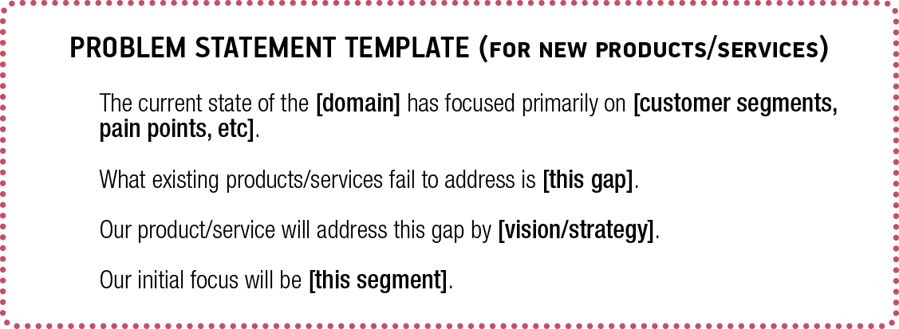
Let’s continue our example from the educational technology space and write a new product problem statement:
The current state of the educational technology market has focused primarily on selling large installations to school systems focused on making teachers’ and administrators’ lives simpler. These services were created in a desktop world and serve only the providers of education, not the students. These services fail to capture the way incoming students use technology today—a mobile-first or, in some cases, mobile-only consumption pattern. Our new Learning Management System product will address this gap by building mobile-friendly learning experiences tailored to the way primary and secondary school students use technology today as well as how they learn.
Regardless of which type of product you’re working on or who created them, problem statements are also filled with assumptions. The team’s job is to dissect the problem statement into its core assumptions. Here’s how to do that.
We like to use this exercise (created by our friend Giff Constable) to facilitate the assumptions discussion.
With our assumptions in hand, we’re ready to move to the next step: writing hypotheses. To do that, we transform our assumptions into a format that is easier to test: the hypothesis statement.
Generally, hypothesis statements use this format:
We believe [this statement is true].
We will know we’re [right/wrong] when we see the following feedback from the market:
[qualitative feedback] and/or [quantitative feedback] and/or [key performance indicator change].
You can see that this format has two parts. A statement of what you believe to be true, and statement of the market feedback you’re looking for to confirm that you’re right.
Expressing your assumptions this way turns out to be a powerful technique. It takes much of the subjective and political conversation out of the decision-making process and instead orients the team toward evidence collected from the market. In other words, it orients the team toward their users and customers.
At their highest levels, hypotheses can seem daunting. Where do you begin? What do you test first? In these situations, we’ve found it helpful to focus our hypothesis writing on features. Figure 3-4 presents the format we recommend for articulating tactical, testable hypothesis statements.
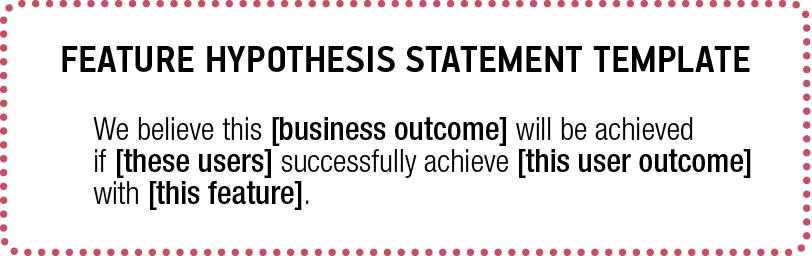
The first field is completed with the outcome you’ve determined is your measure of success. This is the business outcome you’d like to achieve. The second field describes exactly which of your target users you believe you should focus on first. The third field speaks to the end goal, benefit, or the emotional state those customers will get if we design and implement our feature well. The final field speaks to the way we believe we should improve our product or the new features we’d like to build.
It’s easy to jump to features first. Most teams do this. By structuring your conversations with hypotheses you force the team to think through the context first, and especially, the problem you’re trying to solve. This constrains the space for determining which features to work on. Each assumption you put in place increasingly confines the team’s thinking to a more accurate set of potential features. This focus makes any feature discussion more productive, more targeted, and ultimately more relevant to your customers.
Let’s take a look at an example of how this works by going back to the problem statement we looked at earlier:
Our Learning Management System (LMS) was intended to provide a central platform to facilitate communication, student body management, and assessment for parents, students, and teachers in most educational contexts. We have observed new students both in the United States and abroad entering schools with a mobile-first or mobile-only mindset. We have also observed a significant rise in funding for competing educational technology startups catering to this new behavior model. Our products are heavy and not mobile-friendly which increases our risk of losing incoming cohorts of new students through decreased usage and dependency on the LMS.
How might we create more capable and compelling mobile offerings so that our high school and university students increase their usage of the LMS through their preferred mobile device?
The team working on this problem knows that if they don’t meet the needs of an increasingly mobile user base, they will lose business. They need to figure out how to increase mobile use of the system by students. The team’s first step is to declare their assumptions and then write a set of testable hypotheses for this problem.
To create your hypothesis statements, you will need to begin assembling the building blocks. Here is what you are going to want to put together:
The business outcomes you are trying to achieve
The users you are trying to service
The user outcomes that motivate them
The features you believe might work in this situation
After you have all of this raw material, you can put them all together into a set of statements. Let’s take a closer look at each of these elements.
Business outcomes are your definition of done. They are the result your business seeks, and the measuring stick for success. When you manage with outcomes, the question isn’t, “Did you ship it?” Instead, the question is, “How did this create a good result for us, for the customer, or for us both?” When you’re creating hypotheses to test, you want to try to be very specific regarding the outcomes you are trying to create. We discussed earlier how Lean UX teams focus less on output (the documents, sketches, products, and features that we create) and more on the outcomes that these outputs create. Can we make it easier for people to log in to our site? Can we encourage more people to sign up? Can we encourage greater collaboration among system users?
Together with your team, look at the problem you are trying to solve. You probably have a few high-level outcomes that you are trying to create (increasing sign-ups, increasing usage, etc.). Consider how you can break down these high-level outcomes into smaller parts. What behaviors will predict greater usage? More visitors to the site? More downloads of your app? Increasing number of items in the shopping cart? Sometimes, it’s helpful to run a team brainstorm to create a list of possible outcomes that you believe will predict the larger outcome you seek.
In the example in Figure 3-5 (from Giff Constable), an executive leadership team brainstormed and then voted on which Key Performance Indicators (KPIs) the company should pursue next. After consolidating down to the list shown in the photo, each executive was given four M&M’s. As long as they managed not to eat their votes, these executives were able to vote with candy for each metric they felt was most important. Ties were broken by the CEO.
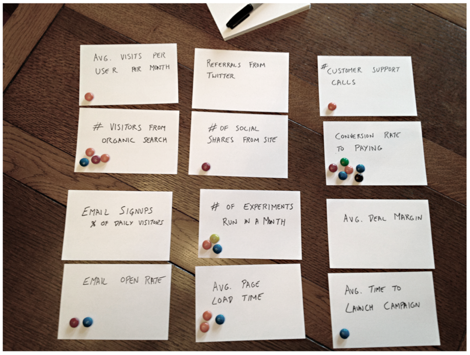
Another way to get to your initial business outcomes is to use a framework called “Startup Metrics for Pirates.” Created by Dave McClure, an early employee of PayPal and the founder of 500 Startups, this framework is based on a customer lifecycle funnel (Figure 3-6). New customers come into the top of the funnel and move through increasing stages of engagement with a business. It also talks about pirates, which is fun.
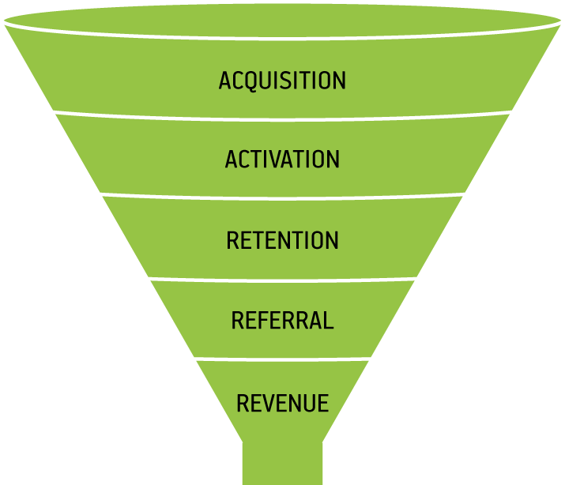
The Startup Metrics for Pirates framework is condensed into the acronym AARRR (Pirates!) and, when expanded, looks like this:
Each step in this framework indicates a greater level of engagement from your customers. And, in a digital product or service, these are all measurable behaviors, which means they serve as great business outcomes to determine the initial traction of your efforts and where to focus your optimization efforts.
If your team already has a well-defined set of personas, the only thing you need to consider at this point is which ones you will be using in your hypothesis statements. If it’s been a while since you last reviewed your personas, things might have changed. This makes for a great opportunity to ensure that they are still relevant and that you and your colleagues still believe they are representative of your target audience. If you don’t have personas yet, though, this section will tell you how we like to create personas for the Lean UX process.
Designers have long been advocates for the end user. Lean UX doesn’t change that. As we make assumptions about our business and the outcomes we’d like to achieve, we still need to keep the user front and center in our thinking.
Most of us learned to think about personas as a tool to represent what we learned in our research. And it was often the case that we created personas as the output of lengthy, expensive research studies. There are a few problems with personas that are created this way. First, we tend to regard them as untouchable because of all of the work that went into creating them. In addition, it’s often the case that these personas were created by a research team or third-party vendor. This creates a risky knowledge gap between the people who conducted the research and those who are using the personas.
In Lean UX, we change the order of operations in the persona process. We also change persona-creation from a one-time activity to an ongoing process—one that takes place whenever we learn something new about our users.
When creating personas in this approach, we start with assumptions and then do research to validate our assumption. Instead of spending months in the field interviewing people, we spend a few hours creating proto-personas. Proto-personas are our best guess as to who is using (or will use) our product and why. We sketch them on paper (Figure 3-7) with the entire team contributing—we want to capture everyone’s assumptions. Then, as we conduct ongoing research, we quickly find out how accurate our initial guesses are and we adjust our personas in response.
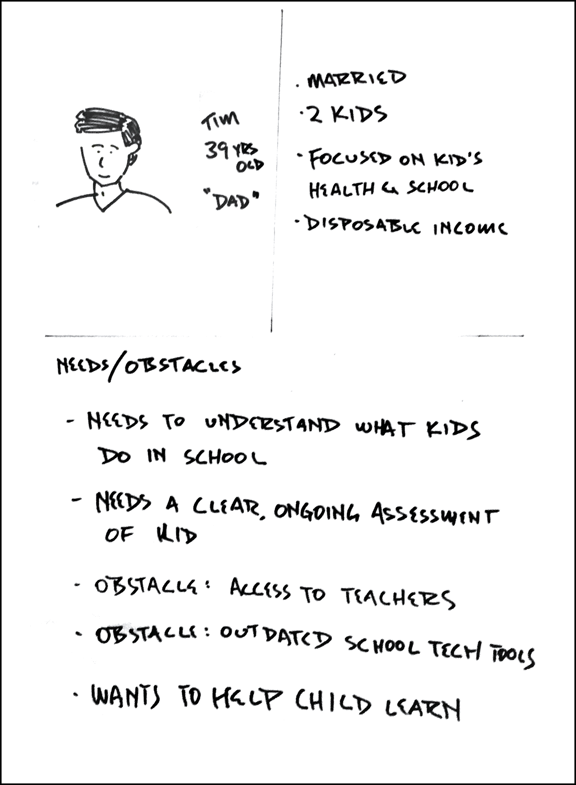
Besides putting the customer front and center for a diverse product development team, proto-personas serve two more key purposes:
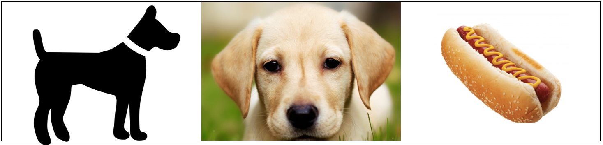
We like to sketch proto-personas on paper using three hand-drawn sections (Figure 3-9). The upper-left quadrant holds a rough sketch of the persona along with her (or his) name and role. The upper-right box holds basic demographic and behavioral information. Try to focus on information that predicts a specific type of behavior—behavior relevant to our product or service. For example, there might be cases for which the persona’s age is totally irrelevant, whereas her access to a specific device, like an iPhone, will completely change the way she interacts with your product.
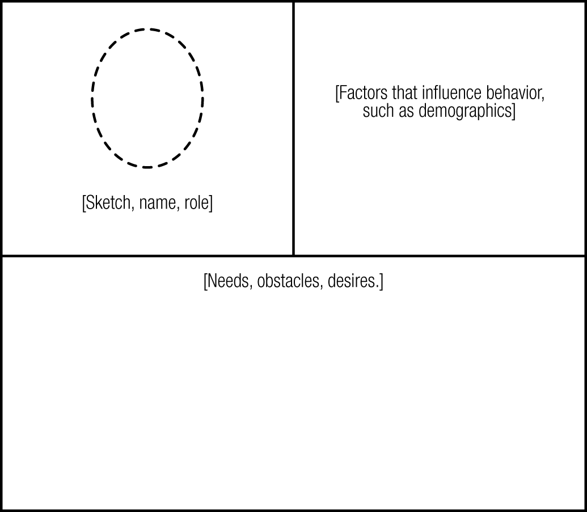
The bottom half of the proto-persona is where we put the meat of the information. Here we capture the high-level needs of the persona along with the obstacles that keep her from achieving these needs. Remember that users rarely need “features.” What they need is to attain some kind of goal. (It’s not always a concrete goal: sometimes it’s an emotional goal, an unarticulated desire, etc.) It is our job to decide how best to get them to their goals.
As with the other elements of the hypothesis statement, we like to start the persona creation process with a brainstorm. Team members offer up their opinions on who the project should be targeting and how that would affect their use of the product. When the brainstorming is complete, the team should narrow down the ideas to an initial set of three to four personas they believe are most likely to be their target audience. You should try to differentiate the personas around needs and roles rather than by demographic information.
After you’ve narrowed down the list of potential users, have the team complete the template for each one. Review this internally and, upon agreement, share with your colleagues beyond the team for their initial input. At this point in the process, you can begin to validate some of your early assumptions. Use your personas as recruiting targets to begin your research. Immediately, there are three things you can determine based on your proto-personas:
Many teams we’ve worked with and heard from over the years run this proto-persona exercise; however, far fewer of them actually go back and adjust their thinking after the initial creation exercise. It is important that you consider proto-personas to be living documents. Each time you conduct customer conversations or usability studies, ask yourself how many of the team’s current beliefs about their target audience are still true. As new information is revealed, bring it up for discussion and adjust the personas so that future research efforts can be more targeted and more successful.
Despite the proliferation of Agile techniques like user stories, the user and their goals often become lost in the lengthy debates over features, designs, and implementations. Empathy is at the heart of great products and services. Designers often have been responsible for advocating for the user from an empathetic point of view. As we now know, this is not uniquely a designer’s responsibility. To achieve broader shared understanding of users and a deeper sense of empathy for what they are trying to achieve, we ask our teams to declare their assumptions about what users are trying to do, in the form of user outcomes.
To do that, ask your teams the following:
What is the user trying to accomplish? Example: I want to buy a new phone.
How does the user want to feel during and after this process? Example: I want to feel like I got the phone I need at a good price and that I’m keeping up technologically with my peers (i.e., I want to feel cool).
How does our product or service get the user closer to a life goal or dream? Example: I want to feel tech-savvy and respected for it.
Note that not every user outcome exists at all three levels. But thinking about outcomes in these terms can help you to find important dimensions of your solution to work on, from the functional, task-oriented outcomes to the more emotional experience-oriented outcomes.
User outcome brainstorming process: Again, sticky notes and whiteboards are our preferred tools here (see Figure 3-11). Allow individuals on the team to generate many ideas in silence and then organize those ideas with an affinity mapping exercise to drive the team toward convergence.
After you have a list of business outcomes in mind and have set your focus on a group of users and their needs, it’s time to begin thinking about what tactics, features, products, and services you can put in place to achieve them. This is typically the part where everyone on the team has a strong opinion—after all, features are the most concrete things we work with, so it’s often easiest for us to express our ideas in terms of features. Too often, though, our design process begins when someone has a feature idea, and we forget to investigate whether the feature will create meaningful results for the business, or for its customers and users. In Lean UX, features exist to serve the needs of the customer and the business.
Feature brainstorming process: Employing the same techniques described earlier, we like to create feature lists by brainstorming them as a team. We’re looking for features we think will help users achieve the user outcomes they seek. If the feature is just a cool idea, but not in service of a user outcome, it’s unlikely to create value. For example, if you’re trying to drive greater collaboration between users of your product and the team comes up with the idea of using a scan to match people with similar eye color into collaboration groups, that is unlikely to achieve the desired outcome and instead is simply an excuse for the team to solve for new technologies.
Have each team member write each idea, using a thick felt pen, on a sticky note. When time is up, ask everyone to post their notes to the wall. Finally, have the group arrange them into themes.
With all of your raw material created, you’re ready to organize this material into a set of tactical, testable hypotheses. We like to create a table like the one in Figure 3-12 and then complete it by using the material we’ve brainstormed. If you’ve been creating all of this raw material in a workshop context, you’ll need a lot of material on sticky notes. Physically move your notes into the appropriate boxes to make rows of related ideas.
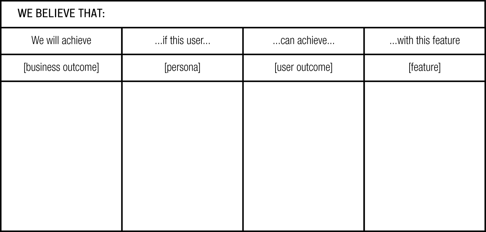
You’ll find during this exercise that there are gaps in your initial brainstorms. Some business outcomes might have no features created for them, whereas some features might not drive any value for the customer or the business. That’s the point of this exercise: to make sense of your initial round of thinking. After you’ve identified the gaps in your brainstorms, fill them in with new sticky notes or leave the less relevant ideas off the chart, as depicted in Figure 3-13. This will help make sense of the undoubtedly large number of ideas your team generates.
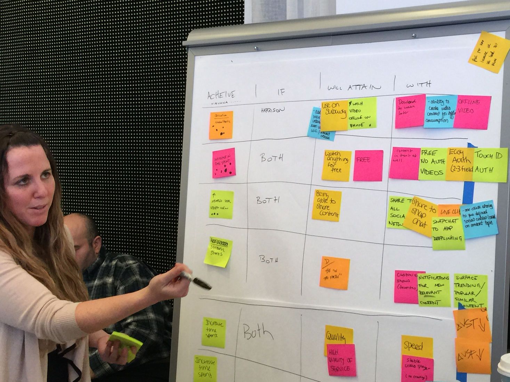
After you’ve completed the chart—7 to 10 rows are a good initial target—begin extracting feature hypotheses from it. Use the hypothesis template shown in Figure 3-4 to ensure you’re including all the relevant components of the hypothesis statement.
As you write your hypotheses, consider which persona(s) you’re serving with your proposed solutions. It’s not unusual to find solutions that serve more than one at a time. It’s also not unusual to create a hypothesis in which multiple features drive similar outcomes. When you see that happening, refine the hypothesis to focus on just one feature. Hypotheses with multiple features are not easy to test. The important thing to remember in this entire process is to keep your ideas specific enough so that you can create meaningful tests to see if your ideas hold water.
Lean UX is an exercise in ruthless prioritization. It’s rare to have a project budget focused strictly on learning. In most cases, we need to ship product at some point, as well. The reason we declare our assumptions at the outset of our work is so that we can identify project risks. After we string them together into hypotheses we create a backlog of potential work. Next, we need to figure out which ones are the riskiest ones—so that we can work on them first. Understanding that you can’t test every assumption, how do you decide which one to test first? We like to create a chart like the one presented in Figure 3-14 and use it to map out the list of hypotheses. The goal is to prioritize which hypotheses to test based on their level of risk (How bad would it be if we were wrong about this?) along with how much value we believe this idea will generate. The higher the risk and the more perceived value involved, the higher the priority is to test those hypotheses first.
This does not mean that assumptions that don’t make the first cut are gone forever. Keep a backlog of the other hypotheses you’ve created so that you can come back to them and test them if and when it makes sense to do so.
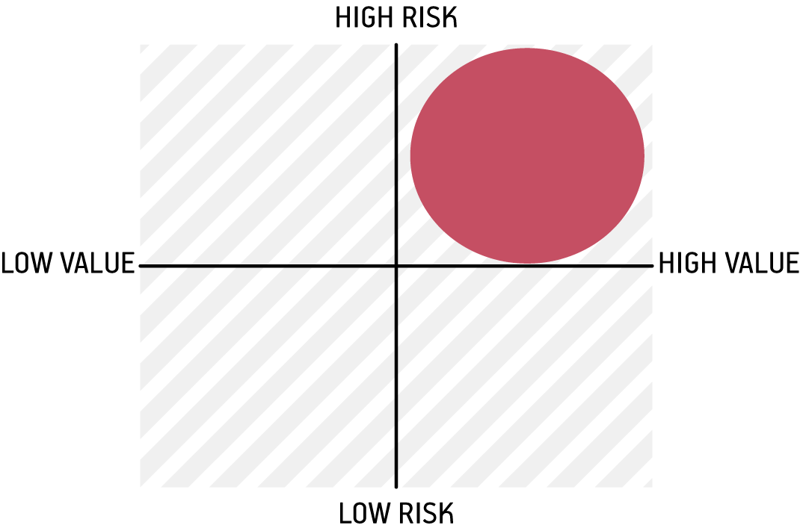
When your list of hypotheses is complete and prioritized, you’re ready (finally!) to move on to the next step: collaborative design. If you’ve gone through this process to this point with your entire team (and we strongly recommend that you do), you’ll be in a great position to move forward together. This process is an effective way to create a shared understanding and shared mission across your entire team.
In this chapter we discussed how we can reframe our work in terms of outcomes. This is a vitally important Lean UX technique: framing our work with outcomes frees us (and our teams) to search for the best solutions to the problem at hand. We looked at the process of declaring assumptions and writing hypotheses. We begin with the project’s problem statements and then acknowledge our assumptions. We transform these assumptions into hypotheses. We learned how to write hypothesis statements that capture our intended features, audience, and goals and that are specific enough to be tested. We end up with statements that will serve as our roadmap for the next step of the Lean UX process: collaborative design.
In the next chapter, we cover what collaborative design is and how it differs from traditional product design. We discuss specific tools and techniques that empower teams to design together and we show you how designing together is the beginning of the hypothesis testing process.